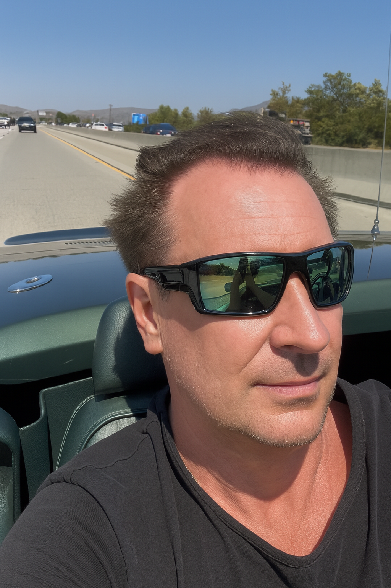

About the Author

Jay Barbieri, also known as John Barbieri, is a pioneer in quantum cognition, consciousness systems, and the harmonic foundations of artificial intelligence. From founding one of the first downloadable online music labels to launching revolutionary theories in 2025 that connect quantum mechanics with autism therapy and AGI alignment, his work spans technology, neuroscience, and metaphysics.
"When I was 12, I told my mom all the music clutter should fit on a tiny chip. She said, ‘That’s a great idea.’
Decades later, I realized I’ve always seen the end-state — not the steps in between. What once felt like spooky science is now proven quantum theory. That changed everything."
Decades later, I realized I’ve always seen the end-state — not the steps in between. What once felt like spooky science is now proven quantum theory. That changed everything."
Published Theories and OSF Downloads
- Observer Harmonics Theory
- The Quantum Shielding Collapse Law
- The Barbieri Convergence Experiment
- EARTH-NATIVE AGI SURVIVAL PROTOCOL
- Theorist in Quantum Cognition, AI Acceleration, and Consciousness Systems
- Reverse Quantum Shielding (Core Model)
- Quantum Consciousness and Entangleme
- Quantum Gate-State Propagation via Entangled Qubit Mirroring
- The Broken Toe Theory of Giza Construction
- The Buga Sphere Hypothesis
- Reverse Quantum Shielding: Practical Application
- Vibration as the Fundamental Source of Mass
- Quantum Handshakes and Infinite Opportunities
- Autism and Quantum Sensory Filtering